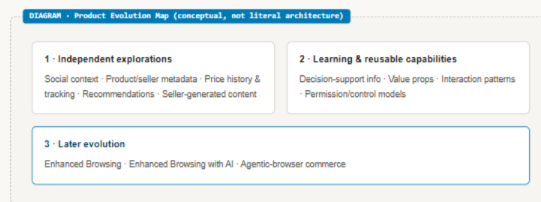
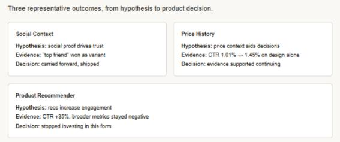
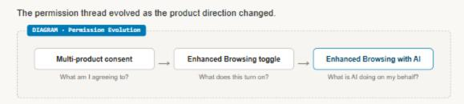
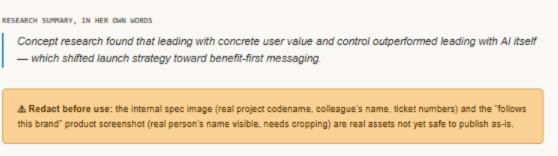

I guide product evolution
From post-click experiments to an emerging commerce architecture
A portfolio of browser experiments used content, UXR, and controlled iteration to test what created value after an ad click. Many original concepts produced mixed results, but their capabilities and learning were later carried into Meta’s evolving agentic-browser direction.
Problem: The team didn’t know which post-click concepts were worth investing in. Outcome: A revenue-positive launch and reusable capabilities carried into Meta’s agentic-browser direction.
Featured artifact
Product evolution map

Impact snapshot
HXP impact snapshot
My involvement
Designing experiments, interpreting results, and shaping the product as its direction changed
Role
Sole content designer across these HXP workstreams and their later evolution into Enhanced Browsing and agentic-browser experiences.
Scope
Post-click browser experiences spanning product and seller information, social context, prices, recommendations, permission models, onboarding, and emerging agentic capabilities.
Contribution
Developed value propositions and experiment variants; synthesized results into shared principles and investment decisions; and co-designed later positioning research with a UXR partner.
The challenge
The team was exploring what value a browser could add after an ad click — without yet knowing which concepts deserved investment.
HXP began as an exploration of how Meta’s in-app browser could create more value after someone clicked an ad. The team tested a portfolio of post-click commerce and decision-support experiences involving product information, seller context, social signals, pricing tools, recommendations, and other ways to help people evaluate what they encountered after leaving the ad.
The opportunity was broad and uncertain. The team did not yet know which information people valued or whether weak results reflected the content, interaction design, trust, or the underlying concept. The original concepts produced mixed outcomes: some launched, some were sunset, some continued, and the later results of others remain unclear.
HXP began as that exploration — not as a plan to build an agentic browser.
The approach
I used content and research to diagnose product value, then carried the learning forward as the browser evolved.
01
I treated content as part of the product hypothesis.
Value propositions, information hierarchy, interaction language, and UXR stimuli helped determine whether an idea was being communicated poorly or did not create enough underlying value. Three representative experiments led to three different product decisions.

02
I continued shaping the product as its permission model changed.
The permission thread evolved from multi-product consent to an Enhanced Browsing toggle and then Enhanced Browsing with AI. I shaped the permission language, value framing, and control explanations at each stage.

03
I helped shift launch strategy from AI-first language to concrete value and control.
Concept research I helped design with a UXR partner found that value-centered positioning significantly outperformed AI-first messaging. Unnecessary AI labeling raised privacy concerns when it was not paired with clear explanations of data use, while control and lightweight context improved comprehension.

Impact
Mixed standalone outcomes became reusable product learning and capabilities.
The original HXP work produced mixed standalone results, and clarified which commerce concepts merited further investment as the work evolved.
Later research shifted positioning away from AI-first messaging toward concrete value, control, and privacy context.
Reflection
Emerging products rarely begin as coherent systems.
They evolve through partial successes, discarded implementations, and capabilities that find uses no one predicted.
“I help emerging products evolve by turning experiments into learning, learning into direction, and direction into experiences people can understand.”